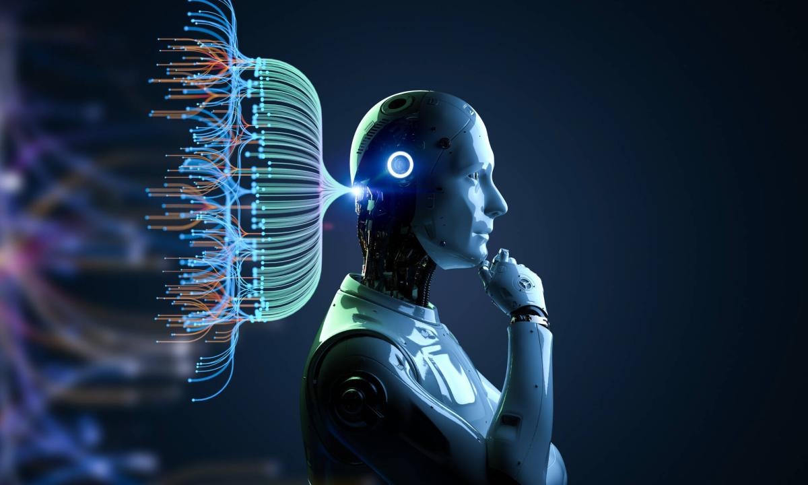

El incesante cambio tecnológico que caracteriza al fundamento de la modernidad ha adquirido realidad efectiva en el marco de la configuración capitalista de la modernidad, es decir, subordinado a la lógica de la valorización y la acumulación. En la sociedad moderna, la tecnología es un instrumento de poder (Ceceña, 1998) al servicio del capital.
reflexionar sobre la IA (sobre lo que ya es, pero también sobre lo que puede ser) es fundamental para abordar el análisis de las tendencias, límites y contradicciones del capitalismo contemporáneo. La IA es hasta ahora la forma más acabada de la tendencia de la modernidad capitalista hacia la automatización del proceso de trabajo y hacia la conversión de la reproducción social en un proceso cada vez más abstracto. La utilización aún incipiente de la IA en los procesos productivos lleva un paso adelante la subordinación de las personas a los objetos y prefigura la posibilidad de que los seres humanos sean casi totalmente prescindibles en los procesos de producción y de que el hombre de hierro, el sujeto sustitutivo, asuma plenamente el control, el sentido y la dación de forma de la reproducción social.La posibilidad de un escenario en que las tecnologías con IA se conviertan en el “equivalente general tecnológico”5 (Ceceña, 1998, p. 42) y en que se alcancen la IA general y la singularidad (que aunque no es inminente se ubica como una tendencia en el horizonte de lo posible) nos obliga a replantearnos el mundo en que vivimos y la forma en que lo concebimos.6 En este sentido, algunas preguntas relevantes son: ¿cuáles son los límites del capitalismo (una sociedad fundada en la apropiación de trabajo humano no pagado) si el trabajo humano es prescindible para la producción de riqueza material? ¿Sería posible seguir hablando de “ejército industrial de reserva” si los seres humanos somos prescindibles para el autómata global? ¿Qué forma cultural tendría una sociedad en la cual la IA sea la tecnología en torno a la cual gira la mayor parte de la producción material y simbólica? ¿Qué concreción(es) asumiría la identidad de las sociedades en las que la IA sea el equivalente general tecnológico?
La IA ha sido una de las ramas de la tecnología más activas y dinámicas en los últios años. En 2017, las grandes corporaciones tecnológicas gastaron 22 mil millones de dólares en más de cien fusiones y adquisiciones relacionadas con IA. En ese año, la inversión total en IA por parte de las corporaciones tecnológicas fue 26 veces superior que en 2015 (The Economist, 2018). Se estima que para el año 2021 las corporaciones tecnológicas invertirán 52 mil millones de dólares anuales en productos y servicios relacionados con IA. La consultora PwC estima que los productos y servicios relacionados con IA podrían representar 15.7 billones [trillion] de dólares para la economía mundial en 2030, más que el producto combinado de China e India en la actualidad. Las empresas líderes en el desarrollo e implementación de la IA en el mundo son Google, Amazon, Microsoft, IBM, Facebook, Apple, Alibaba, Baidu y Tencent. Todas estas empresas son estadounidenses y chinas. A pesar de su diversidad (algunas se dedican al comercio minorista, otras son plataformas de redes sociales, algunas más son desarrolladoras de software), todas ellas comparten que son importantes compradoras de empresas tecnológicas pequeñas con el objetivo de apropiarse del conocimiento de sus empleados y de sus patentes más innovadoras